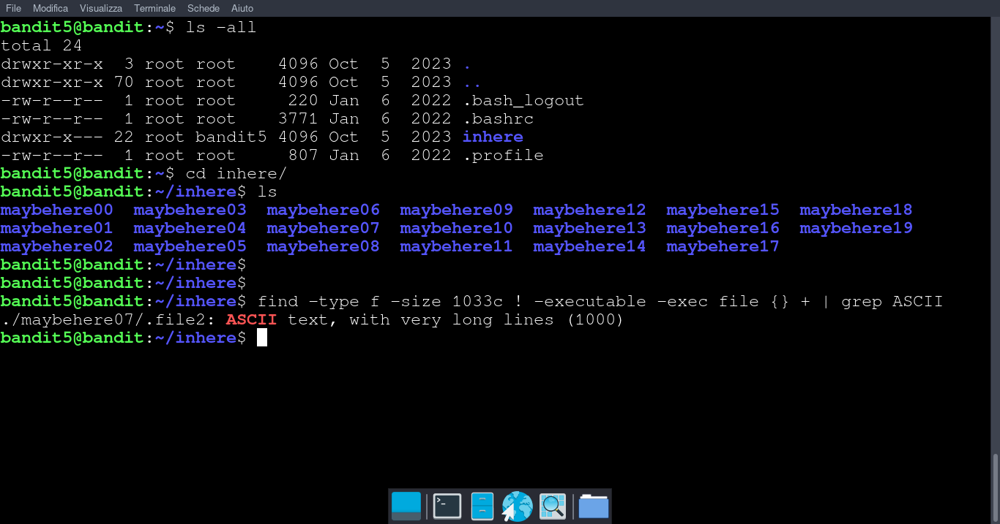

Obiettivo di livello
La password per il livello successivo è archiviata in un file da qualche parte nella directory inhere e ha tutte le seguenti proprietà:
leggibile dagli umani 1033 byte di dimensione non eseguibile
Comandi di cui potresti aver bisogno per risolvere questo livello
ls, cd , cat , file , du , find
Soluzione livello 5
ci connettiamo con ssh alla porta 2220 e user bandit5 con passowrd del livello 4
oppure scarichiamo il nosto script da Github e avviamolo con python3 ssh_bandit.py bandit5
attraverso il comando find diamo
- -type f per dire che cerchiamo un file
- -size 1033c per comunicare di voler trovare solo i file con dimensione 1033 Byte(la c per specificare Byte)
- ! -executable per indicare al comando di volere solo i file non eseguibili(! sta per not)
- -exec file {} + Per ogni file trovato, esegue il comando file (che identifica il tipo di contenuto del file). con + diciamo ad exec che è la fine del comando(tipo ;) NB: il carattere '+' deve essere staccato da {} oppure lo riconosce come un unica stringa e non come carattere di terminazione del programma
- | grep ASCII filtra l'output con il comando grep indicando di far visualizzare solo le stringhe con "ASCII" presente(cioe file leggibili dall'umano, human redeable). Usando il parametro -i a grep possiamo far ignorare a grep la presenza di caratteri minuscoli o maiuscoli; quindi diremo a grep di farci vedere i risultati della parola "ascii", "Ascii", "ASCII","aScii" ecc.
passwd: P4L4vucdmLnm8I7Vl7jG1ApGSfjYKqJU